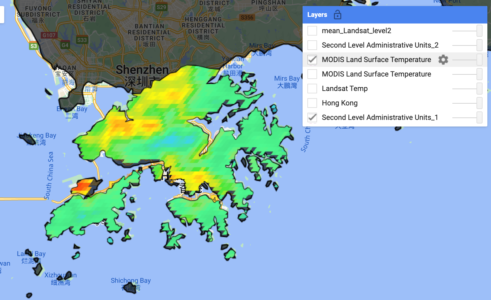
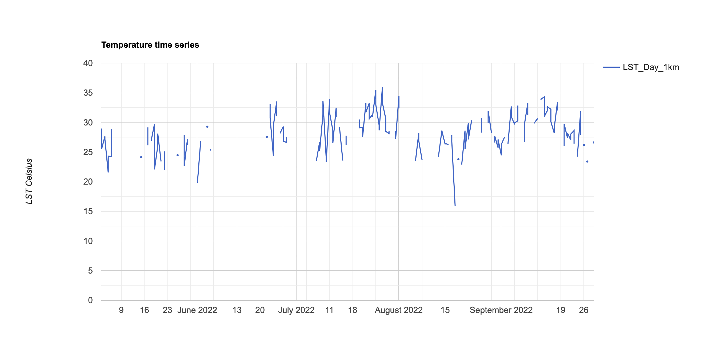

8.1 Summary of Lecture 8
This week, we covered Urban Heat Island (UHI) and policy related to it. UHI effects occur when cities replace natural land cover with dense concentrations of pavement, buildings and urban structures that absorb and retain heat. In highly concentrated urban areas with limited greenery, the area will become “islands” of higher temperatures relative to outlying areas (US EPA 2014). There are factors that cause and intensify UHI, such as heat generated from human activities, weather and geography and reduced natural landscapes in urban areas. However, from the view of remote sensing, there are two main factors that is identified as UHI from the images, including the dark surfaces that retain heat and less vegetation to regulate temperature. Other than that, another factor would be the low Sky View Factor(SVF),how much we can see the sky when we look up. The magnitude of UHI in world cities are shown below, showing the variations in different regions.
Unfortunately, UHI actual costs economic loss. Economist expected that climate change can cost a lot of money and impact every sector of the economy. It was expected that if UHI is intensifies, there will be higher cost for the city, which will be caused by the replacement of vegetation and bodies of water by concrete, asphalt, and other materials that trap more heat (“Urban Heat Island Effect Could More Than Double Climate Costs for Cities” 2017). Socially, for Shanghai, it was expected that people from urban area would have much higher excess mortality rate due to hot related illness than those from exurban areas. Since this is not a local issue, but globally occurring in different metropolis, urban areas, hence some international regulations should be discussed below.
8.1.1 Global policy
From the perspective of the whole world, the urban population around the world has doubled from 1754 million in 1980 to 3,594 million in 2010, and this number will reach up to 5,167 million in 2030 (United Nations, 2018). It was predicted that by 2050, over 68% of the global population will be living in cities, the rapid urbanisation has caused the various problems, especially when urban areas actually only constitute less than 1% of the earth’s surface. UHI has become a more concerning issue across the globe. In 2021, the UN Environment Programme (UNEP) published detailed guidance to help the world combatting extreme heat, especially in urban areas where heating occurs twice the global average rate. THe book is caled Beating the Heat: A Sustainable Cooling Handbook for Cities. The handbook notes that the demand for space cooling increasing and the fact that urban heat is not evenly distributed. I think that the handbook has a lot of pages, which might be lengthy to most of the people. However, when it comes to city planning, I believe that city planner are going to find this handbook handy as it provides comprehensive overview of tools to cool cities sustainably and equitably. Also, with 80 supporting case studies that are currently running in the world, I think it would be useful for city planners to reference and create a more sustainable plan for cooling cities accordingly.
Below shows some of the case studies
| City | Measures | Goals |
|---|---|---|
| Seoul, South Korea | Restore the Cheonggyecheon stream that runs through the city replaced 5.8 kilometres of elevated expressway covering the stream with a mixed-use waterfront corridor. | The waterfront corridor decreased temperature 3.3°C to 5.9°C compared to a parallel road a few blocks away |
| Medellín, Colombia | From 2016 to 2019, the city created 36 corridors, 18 along major roads and 18 along waterways, covering over 36 hectares. | The areas with green corridors have already seen temperature reductions of up to 4°C |
| Guangzhou, China | The municipal government adopted regional centralized cooling as part of a green and environmentally friendly modern urban centre in the core area of the Pearl River New City development | The local environmental temperature in the core area of Zhujiang New Town was reduced by 2-3°C compared to using distributed cooling systems. |
In remote sensing, it is capable to provide global and temporal observations to monitor the effects brought by UHI. One common way to capture data about UHI is through thermal mapping to monitor the Land Surface Temperature (LST). Other than UHI, Voogt and Oke (2003) suggested an alternative sub-classification analogous to UHI, called Surface Urban Heat Island (SUHI). The SUHI studies surface temperature differences between urban and rural areas, also addresses temporal variability.
8.1.2 Hong Kong’s UHI
In this practical, I have chosen my hometown Hong Kong to analysis the UHI with Landsat and MODIS. The reason I chose Hong Kong is because it is high density city situated in the sub-tropical climate region with hot and humid summer months. Hence, it is a city that suffers from UHI and is valuable to examine. I load up a level 2 administrative area to extract temperature data for Hong Kong in summer months from May to September. As mentioned in the practical, the data comes with Kelvin (K), converting it back to celcius (C), the formula is
C = K - 273.15.Hence, with the ImageCollection extracted from “2018-01-01’, ’2022-12-10” in May to September, there are many images used. I have to put larger range in the date as the data is not sufficient with only 2 year, it did not cover the administrative area of Hong Kong. the .subtract doesn’t work on ImageCollection, so the 273.15 from the formula is adopted to subtract each image within the collection. After that, the reducer using mean as argument is used to create a map.

The same process is done with adopting another instrument called Moderate Resolution Imaging Spectroradiometer (MODIS). It is an instrument that aboard both Terra and Aqua satellites. The scale factor has to be applied because the resolution for MODIS data is at 1km resolution. Therefore, I used the scale factor to multiply by 0.02 and subtract with 273.1 (for the kelvin celcius change). In addition, I have adjusted the range of date from January to Octorber as the results are not very effective if I only include May to September.

The time series for MODIS data from May to September is shown below. The range of temperature is not large, the average temperature is above 25 degrees, with only slight fluctuation. However, it can be seem that some days are above 35 degrees.

8.2 Application
In the summary, I have covered the global policy on UHI, for application, I will use a local policy as an example on how cities have been adopting to combat and mitigate UHI.
8.2.1 Local Policy
8.2.1.1 New Orleans, US
In the US, Climate Central, nonprofit news organization, created an index to evaluate the intensity of urban heat islands and applied it to 159 cities across the U.S by measuring the type of land cover in each city, from greenspace to paved areas, and factoring in building height and population density. The cities with the five most intense urban heat islands are New Orleans, Newark, N.J., New York City, Houston, and San Francisco. According to a study by the Climate Central, on average the city is about 9 degrees hotter than the surrounding countryside.
The figure below illustrates the average surface temperatures in New Orleans from 2019 to 2021. The areas with higher temperature are areas with less than 10% of tree canopy. Hence, the authority has decided to implement plans to combat the rising surface temperature in urban areas.

To combat extreme heat, authority in New Orleans proposed a new master plan for rebuilding its urban forest calls for 100,000 new trees to be planted by 2040. It was hoping that the strategic planting of 100,000 trees could increase the tree canopy in each New Orleans neighborhood to cover at least 10% of the area. While trees and plants have a significant cooling benefit, the reforestation plan offers a more equitable model to reduce dangerous extreme heat while lowering energy use.

I personally think that this approach is very pragmatic and reasonable, as trees area essentially the most effective and immediate effect to cool heat. In fact, most of the countries wen combating heat, they try to build trees to cool down the city. However, I am concerned about the maintenance and growth of the newlyplanted trees, just like what Madrid did with the metropolitan forest in week 4, the maintenance of the growth of trees are very important because it without proper management, trees might overgrown, the roots might damage structure etc. Hence, I think planting trees are a good method to combat UHI effects, but there is a need to properly manage afterwards, especially in an area that is already densely populated and dense with development.
8.3 Reflection
I think urban heat island is a topic that has be brought up for years, and I always felt the effects of UHI as Hong Kong is always really hot, not only because it is located within the suptropical climate, but definitely the high rise buildings, and the materials in densely populated urban areas have an effect on retaining and absorbing heat. One interesting fact is that Hong Kong rely on air conditioning heavily during summer time. Not only do shopping malls or public areas use air conditioning, even people at home turn on the air conditioner for full day because it is too hot. However, this actually creates a vicious cycle on UHI effects because it uses large amount of energy and produce more heat when it is turned on. to look broader, Greenhouse Gas (GHGs) and burning of fossil fuels to provide electricity for air conditioning might exercebate global warming.Hence, I think that not only from building things of the existing things to cool down surface, policies should also address issues like the excessive use of electricity on cooling, which actually contributes back to UHI.
“Urban Heat Island Effect Could More Than Double Climate Costs for Cities.” 2017. https://news.mongabay.com/2017/06/urban-heat-island-effect-could-more-than-double-climate-costs-for-cities/.
US EPA, OAR. 2014. “Learn About Heat Islands.” https://www.epa.gov/heatislands/learn-about-heat-islands.